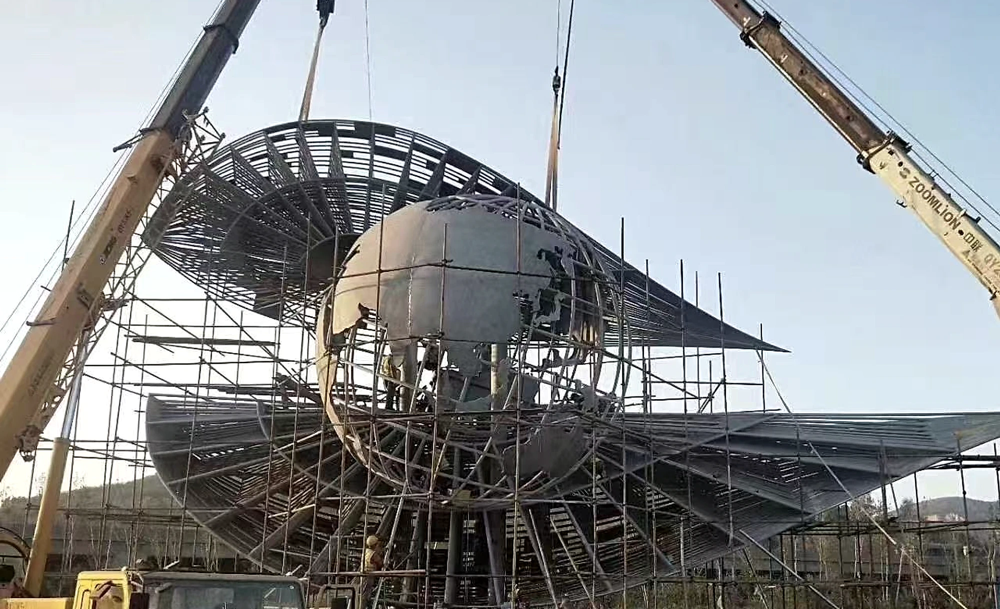

What should I send before requesting a quote?
Send site photos, plan dimensions, desired scale, material direction, destination country, deadline, and any installation constraints.
Three verified construction-phase records show the structural core, repeated stainless steel wing members and crane-assisted installation at a Middle East public site. They are not completed-project photographs; client details, city and exact dimensions are not published.



Read the Middle East landmark construction guide
Send site photos, plan dimensions, desired scale, material direction, destination country, deadline, and any installation constraints.
Yes. Confidential drawings can be reviewed privately, and an NDA can be discussed before deeper technical review.
Common routes include bronze, 316L stainless steel, stone, corten steel, and hybrid combinations selected for exposure, touch, and maintenance.
The commission route can include segmentation, trial assembly, export packing, documents, and installation guidance for overseas projects.
Send drawings, site photos, scale, material direction, destination country, and schedule to begin a serious review.